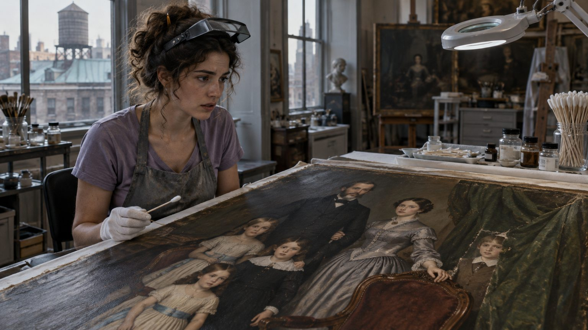
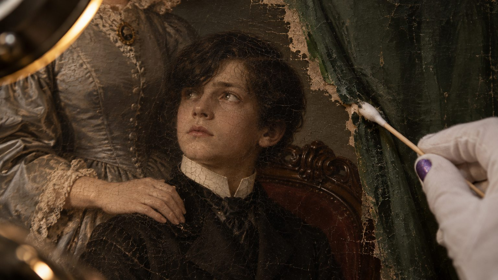
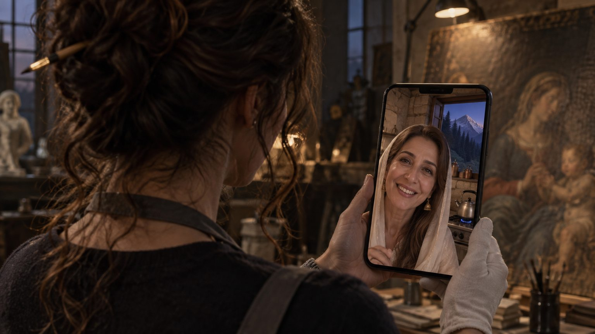
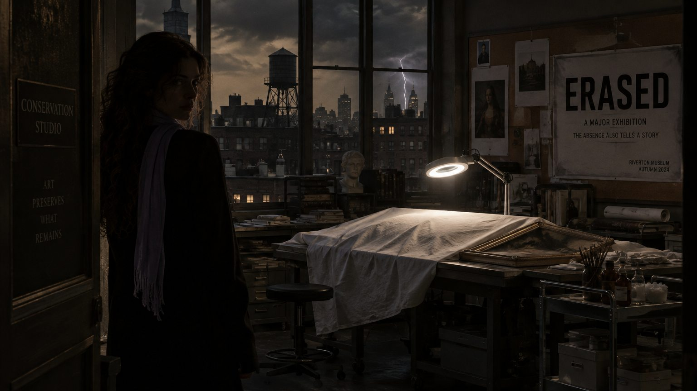
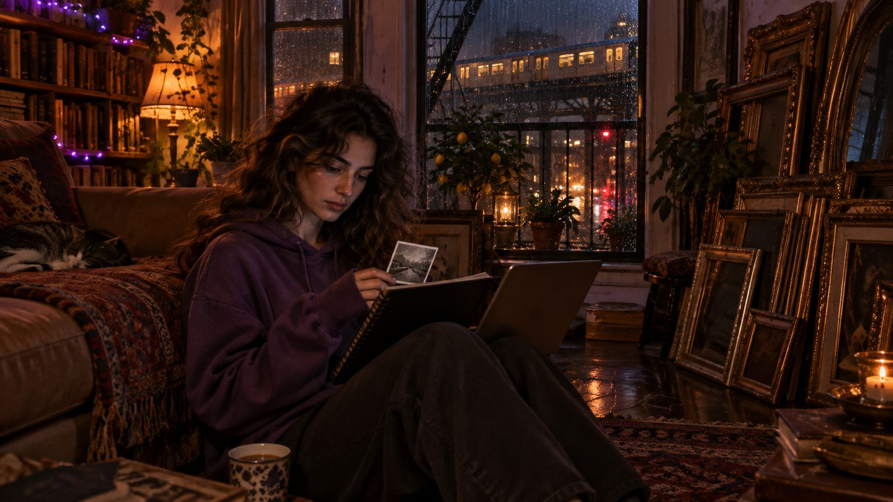
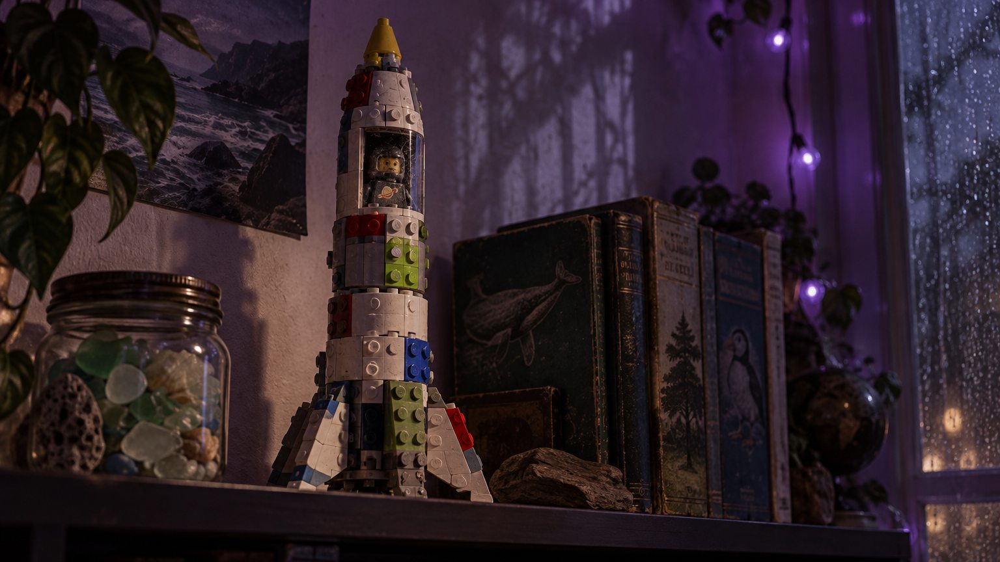
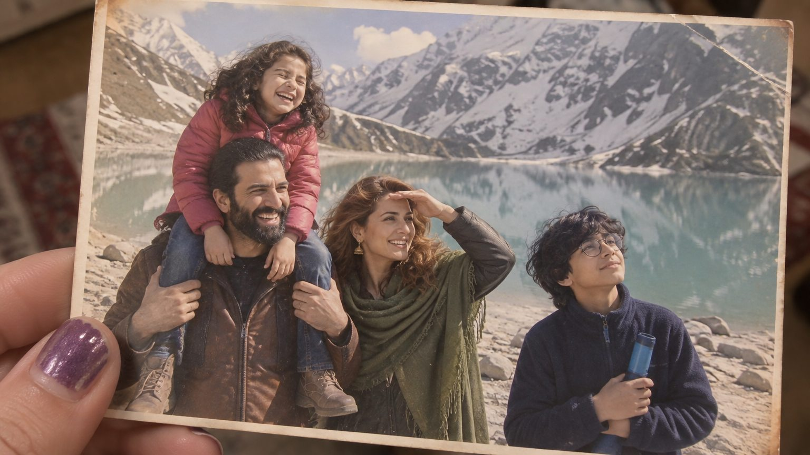
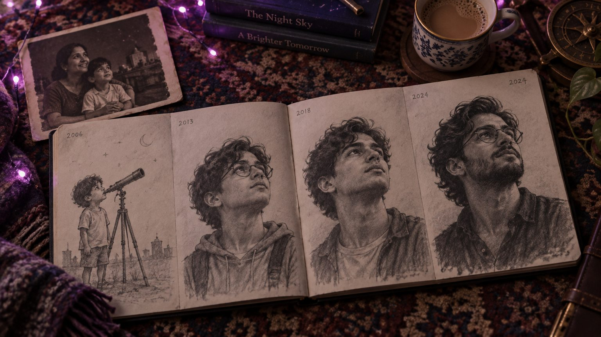
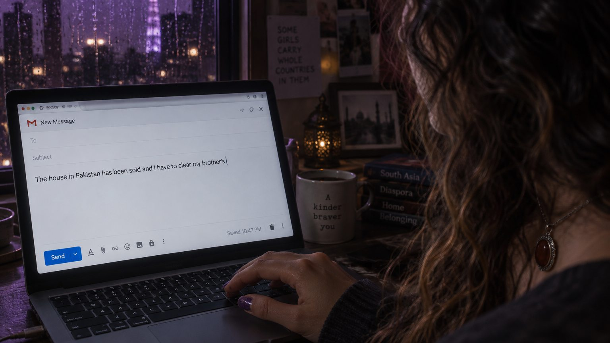

The Stars on the Ceiling
Scenes 1 and 2, New York, June 2026. Nine frames, in order. Read the pictures; the line under each says what happens.


The Painted-Over Child

1ANysa cleans an 1871 family portrait. She has always hated the empty chair in it. Under the green curtain paint, a boy's white collar appears.
Wonder

1BA boy, painted out 150 years ago. The mother's hand was never on an empty chair. It was on her son.
Cold recognition

1CAmmi calls from Chandsar just after dawn prayer. Abbu has a new job in Islamabad and the house is sold. Clear out the store room.
It was Eesa's room.
The first crack

1DShe leaves. The painting lies under a white sheet. ERASED hangs on the wall. The storm reaches the city.
Dread · Eesa's theme enters
Four Faces

2AHer apartment: purple lights, forty-one restored frames with no paintings in them, the 7 train glowing through the rain. The flight is on screen. She doesn't book it yet.
A loneliness she has made peace with

2BThe rocket Eesa built from mismatched bricks. Nobody else ever notices it. Rule No. 1: when someone is erased, their things stay.
Mystery

2CSaiful Muluk, August 2010. Abbu (39), Ammi (36), Nysa (9) on his shoulders, and Eesa with his telescope, looking at the sky. Everyone else sees three faces.
Grief nobody believes

2DEvery June since he vanished, she draws him one year older. Fourteen drawings. She has never written his name.
Love, kept by hand

2EShe books the flight and writes to her boss: …clear my brother's
. She deletes it, writes the old store room
, and sends.
Heartbreak, quietly